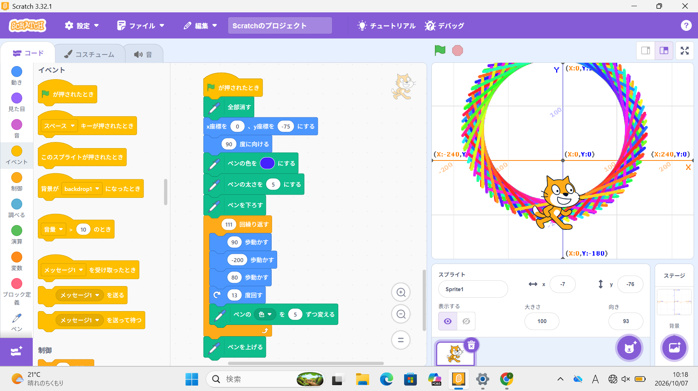
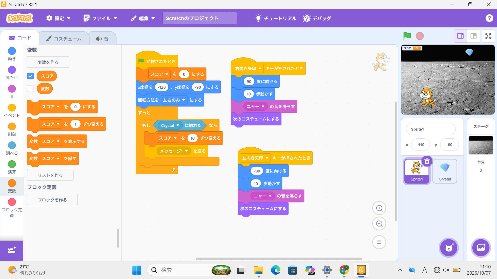

1週目のレポート ： 公大高専１年実習I-1
4b班32番fu-mi
第1週目
1-1 サイエンスアート

1.内容
スクラッチを用いてサイエンスアートを作った。ネコを移動させるプログラムと移動に合わせて
線の色を変えながら線を引くプログラムを作成し、ネコが移動に合わせて線を引くようにする。
そしてネコを繰り返し移動させることで図形を描くことができる。
2.感想
プログラミングというものは機械を動かしたりアプリを開発したりするための物だと思っていたが、
サイエンスアートを通してそれ以外にも様々な利用方法がある事を知り、なかなか奥が深いなと感じた。
1-2 ゲーム

1.内容
スクラッチを用いてゲームプログラミングを行った。ネコを矢印キーで操作できるように、
リンゴは上から落ちてくるようにプログラムをし、リンゴがネコに触れた時、リンゴが消えて
得点が入るようにプログラムすることでゲームを作成した.
2.感想
ゲームのプログラミングということで、最初は凄く難しそうだなと考えていたが、
いざやってみると思いのほか簡単で楽しくできたと思う。もし機会があればまた
簡単なゲームを作ってみたいなと思う。
1-3 ホームページ作成
私のホームページ
1.内容
Githubを用いたホームページの作成を行った。ホームページはコードを書き換えることで編集
することができ、自分のプロフィールを書き込むことで自分のホームページを作成することができる。
2.感想
自分が普段何気なく見てきていたホームページでも、裏では多くのコードから作られており、
実は作るのがとても大変なんだなと感じた。また、ホームページを作成する日が来るとは
思っていなかったので貴重な経験ができたと思う。
各ページへのリンク
1週目のレポート
2週目のレポート
3週目のレポート
私のホームページ